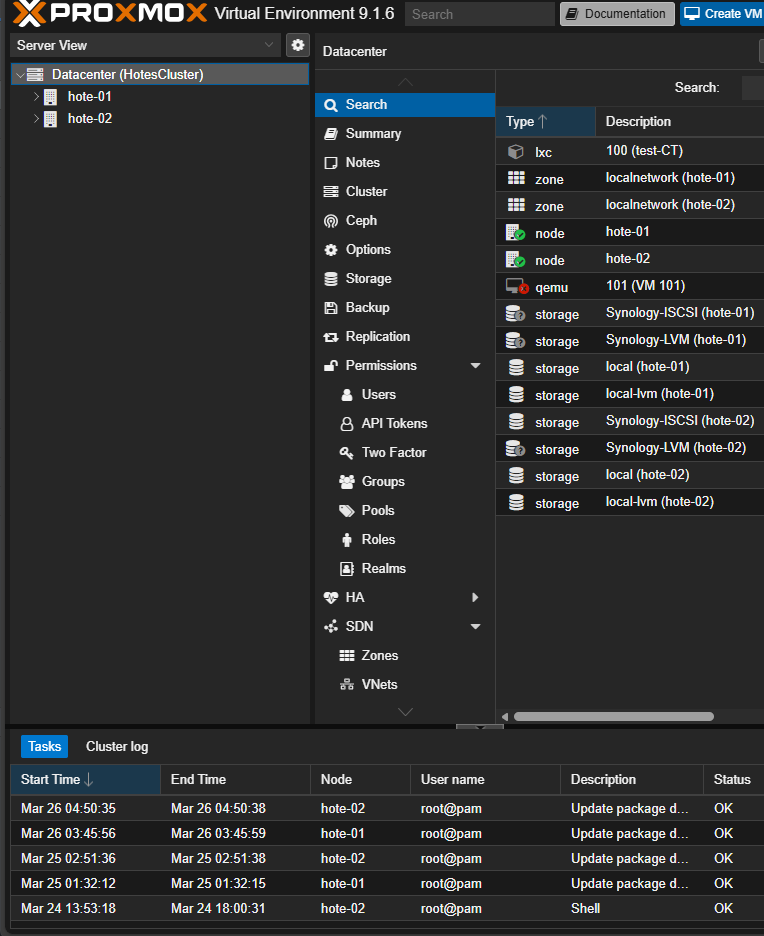
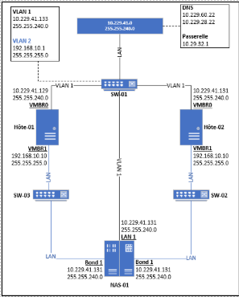
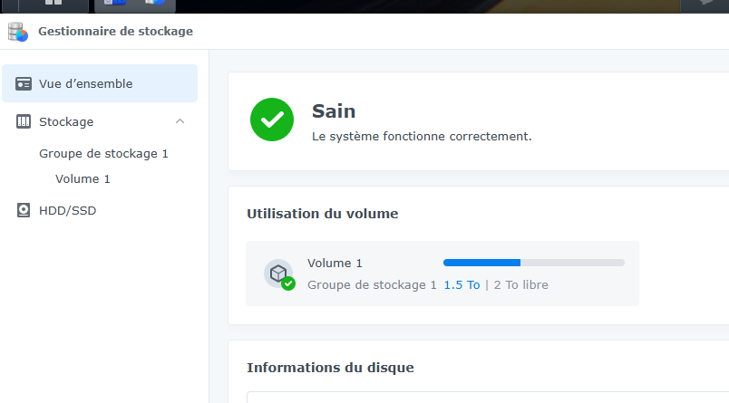

Prise à distance de machine via proxmox
Le projet vise à moderniser l’environnement pédagogique de virtualisation utilisé dans les laboratoires informatiques. Actuellement, les travaux pratiques sont réalisés à l’aide de machines virtuelles locales exécutées sur les postes étudiants. Bien que cette méthode permette d’apprendre les bases de la virtualisation, elle ne reflète pas les infrastructures professionnelles actuelles.


